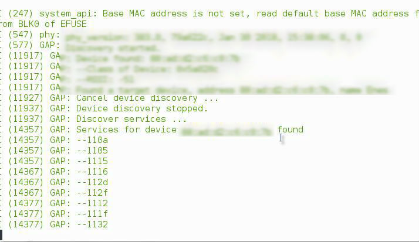

ESP32 ile çalışmak
Written on
Selamlar,
Geçen hafta sonu sevdiğim bir abim daha önce almış olduğu ESP32 kartını denemem için bana getirmişti. Malesef sadece dün akşam bu kart ile ilgilenebildim. Tabi ki daha öncesinde kart hakkında araştırmalar yapmış bulundum.
Bu kart ne işe yarar?
Bu kart tümleşik bir kart olarak geçiyor. Kendine ait bir işlemcisi/rom eprom artık ne diyorsunuz bilmiyorum metadolojiye o kadar hakim değilim. Yani burada bahsetmek istediğim şey bu kartı alıp usb ile bağladıktan ve programladıktan sonra tek başına bir şekilde kullanabiliyorsunuz. Herhangi bir board'a ihtiyacı yok ( eg: Arduino, Raspberry ).
Özellikler
Aşağıda ki resimde bir karşılaştırma göreceksiniz. Bu karşılaştırma da oldukça popüler olan ESP8266 modülü ile ESP32'nin farklarını göreceksiniz. ESP32 de bluetooth olduğundan dolayı Low Level Bluetooth projelerinizde bile kullanabilirsiniz(Beacon).
Beacon Türkçe Beacon Nedir?

Ben şuan bu kartı Samsung Fast Charge özellikli bir usb kablosu ile sıkıntısız bir şekilde kullanıyorum. Tabi ki kabloyu USB(5.0v) üzerinden bağlıyorum.
Başlayalım
Öncelikle bu yazıyı ben bu işte profesyonel, çok iyi olduğum için değil dün akşam bu konuda herhangi bir Türkçe referans bulamadığımdan dolayı yazıyorum. Bir nevi çevirmenlik yapacağım.
Nelere ihtiyacımız var?
- Bilgisayar
- ESP-IDF ( ESP32 için çeşitli script ve toolların olduğu bir paket )
- ESP32
- USB Kablosu
Linux için kurulum
Ben debian based bir sistem kullandığımdan dolayı aşağıda ki gereksinimleri kuracağım sizler işletim sisteminize göre bunları kurmalısınız.
sudo apt-get install gcc git wget make libncurses-dev flex bison gperf python python-serial
Xtense-ESP32 Paketini Kuralım
Herhangi bir yerde esp adında veya farklı bir ad ile klasör oluşturunuz. Ben örneğe sadık kalacağım için home dizini üzerinde esp adında bir klasör oluşturdum. Daha sonra burada aşağıda ki komutu girdim.
wget https://dl.espressif.com/dl/xtensa-esp32-elf-linux64-1.22.0-80-g6c4433a-5.2.0.tar.gz
Şimdi paketimiz indikten sonra bu sıkıştırılmış dosyayı bir klasöre açalım.
tar -xzf xtensa[tab-tab]
Açtığımız klasör içerisinde bin klasörüne gidip isterseniz burada pwd yazabilirsiniz. Buna neden ihtiyacımız var? Çünkü kullandığımız sisteme environment olarak eklememiz gerekmekte.
Ben ZSH kullandığımdan dolayı .zshrc dosyasına ekledim fakat siz BASH kullanıyorsanız .bashrc veya hepsinden bağımsız olarak /etc/profile dosyasına aşağıda ki kodu ekleyelim.
export PATH="$PATH:$HOME/espdizininiz/xtensa[tab-tab]/bin"
Environment ne diye soracak olursanız sizi şuraya alalım
Evet burayı tamamladıysak şimdi ESP-IDF kuralım. ESP-IDF içerisinde bize başlangıç aşamasında lazım olacak her şey var. Örnek vermek gerekirse Hello World uygulaması, Bluetooth Scanner, Wireless Scanner gibi amacımıza uygun kod blokları hali hazırda içerisinde bulunuyor.
ESP-IDF Kuralım
İstediğimiz bir yere Github üzerinden aşağıda ki komut ile repomuzu indirelim.
git clone --recursive https://github.com/espressif/esp-idf.git
İndirdikten sonra içerisine girip git submodule update --init yapalım. Yukarıda Environment olarak tanımlama yapmıştık hatırlarsanız aynısını ESP-IDF içinde yapalım.
export IDF_PATH=~/esp/esp-idf
Merhaba ESP32
Kurulumlarımız tamamlandıktan sonra bir şeye başlarken her zaman yaptığımız gibi bir hello world yazdıralım. Bu yazma ekranı tabi ki bizim terminalimizde fakat ESP32 tarafından yazılmış olacak.
ESP-IDF içerisinde examples/get-started içerisinde hello_world adlı klasöre gidelim.
Aşağıda ki komutu girelim.
make menuconfig
Bu komutu girdikten sonra sizi terminal üzerinde bir arayüz karşılayacak burada kartımıza ait bilgileri değiştirebileceğiz. ( bende default tanımlı geldiği için değiştirmedim ).
Aşağıda ki resmi direk referans sayfasından alıyorum.

Burada en önemli nokta Serial Flasher Config
Buraya girdiğinizde aygıtınızın bağlı olduğu serial port'u göreceksiniz. Bende bu /ttyUSB0 sizler bunu ls /dev/tty* komutunu girerek görebilirsiniz. Bu kısımda hangisi olduğunu bilemiyorsanız aygıtı çıkartıp ve takıp komutu 2 kere çalıştırmanız yeterli.
Serial Flasher Config kısmından Serial Portumuzu girdikten sonra Save yapıyoruz.
Hadi uygulamayı ESP32'ye atalım
Bir üst kısımda uygulamamızın ayarlarını kayıt etmiştik hatırlarsanız. Şimdi bu uygulamayı ESP32 üzerine atmamız gerekecek. Bunun için yapmamız gereken tek şey aşağıda ki komutu girmek.
make flash
Bu komutu girdikten sonra yazılımınız ESP32 üzerine atılacaktır. Eğer Connect kısmında benim gibi hata alıyorsanız bu kısımda yapmanız gerken şey ESP32 üzerinde ki BOOT tuşuna basılı tutmanız veya 1 kere basmanız bunu zaten deneyerek görebileceksiniz.
Hadi uygulama çalışıyor mu bakalım
Attığımız uygulamanın çalışıp çalışmadığını veya ne çıktı ürettiğini görmek isterseniz bunun için terminale aşağıda ki komutu yazmanız yeterlidir.
make monitor
Not: Hello World uygulamasından sonra terminalden çıkamayabilirsiniz. Bunun için klavye kısayolu : CTRL + ] (Köşeli Parantez)
Bağlantı problemi yaşıyorum?
Cihazınızın sağlam olup olmadığını test etmek için ve bağlantı kontrolleri yapmak için ESP-IDF içerisinde Components kısmında esptool diye bir klasör bulunuyor. Bu klasörün içerisinde ki esptool.py dosyasını aşağıda ki komutla çalıştırırsanız eğer bağlanabilirse size ESP32'niz hakkında bilgiler verecektir. Bu komutu girdikten sonra üzerinde ki tuşları deneyerek hangisine bastıktan sonra Connect olduğuna bakarsanız da olur. (Ben gece 4 de yaptığımdan dolayı hatırlamıyorum sanırım rastgele basmıştım.)
python esptool.py --chip esp32 -b 115200 -p /dev/ttyUSB0 flash_id
veya
python esptool.py --chip esp32 -b 115200 -p /dev/ttyUSB0 chip_id
Aşağıda ki ekran görüntüsünü de kendi ekranımdan aldım.

Okuduğunuz için teşekkürler.